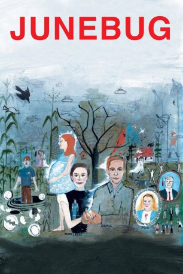

#11766 Junikäfer
Alternativ: Junebug (Englischer Titel)
Auszeichnungen: für 1 Oscars nominiert
 
 IMDB-Wertung: 6.9 / 10
IMDB-Wertung: 6.9 / 10  Tomatometer: 87
Tomatometer: 87  Metascore: 80
Metascore: 80 
Auf dem Weg zu einem exzentrischen Künstler macht die frisch verheiratete Galeristin Madeleine mit ihrem Ehemann George einen Abstecher, um dessen Familie auf dem Land kennen zu lernen: die eifersüchtige Mutter, den wortkargen Vater, den wütenden jüngeren Bruder Johnny, der immer im Schatten seines erfolgreichen Bruders stand, und dessen hochschwangere, unschuldig plappernde Ehefrau Ashley. Während Ashley Madeleine sofort für ihre Kultiviertheit und ihr Auftreten bewundert, sind die anderen Familienmitglieder viel reservierter. Auch George fällt zurück in seine alte Rolle und verbringt viel Zeit alleine. Unverständnis, Fremdheit und eine Art Galgenhumor bestimmen das Aufeinandertreffen von Großstadt und Provinz während Madeleine den Künstler-Deal vorantreibt und Ashley auf die Entbindung zusteuert.
Jahr: 2005
Dauer: 102 Minuten
FSK: 0
Land: USA Studio: Sony Pictures ClassicsTonspuren:
Untertitel:
Auflösung: SD (608x336) Größe: 699 MB
Genre: Drama, Komödie
Regisseur: Phil Morrison
Drehbuch: Angus MacLachlan
Soundtrack: Yo La Tengo
Darsteller:
 Embeth Davidtz als Madeleine
Embeth Davidtz als Madeleine Alessandro Nivola als George
Alessandro Nivola als George Jerry Minor als Scout who stays outside
Jerry Minor als Scout who stays outside- Matt Besser als Scout who goes in
- Will Oldham als Bill Mooney, scout
 Frank Hoyt Taylor als David Wark
Frank Hoyt Taylor als David Wark Scott Wilson als Eugene
Scott Wilson als Eugene Ben McKenzie als Johnny
Ben McKenzie als Johnny Celia Weston als Peg
Celia Weston als Peg Amy Adams als Ashley
Amy Adams als Ashley- Bobby Tisdale als Norman Venable at Replacements, Ltd.
- Joanne Pankow als Sissy, David Wark's sister
 R. Keith Harris als Bud, young pastor
R. Keith Harris als Bud, young pastor- Jill Wagner als Millicent (Friend at Shower)
- Carrie Daniel als Bonnie, friend at shower
- Caitlin Van Hecke als Emily, pastor's wife
- Tanya Allen als Extra
- Tiberius Bright als Extra
- Robert Harris als Extra
- Becky Young als Extra
- David Kuhn als Auctioneer
- Alicia Van Couvering als Bernadette
- Beth Bostic als Lucille, the neighbor
- Kevin Harlow Jasper als Hollerin' Man
- Dan McLamb als Hollerin' Man
- Jeffrey Dean Foster als Gallery Assistant
- Laura Lashley als Gallery Assistant
- Chuck Russell als Chuck at Replacements Ltd.
- Tarra Jolly als Tarra Jolly at Replacements, Ltd.
- Amy Barefoot als Kitty, friend at shower
- Jamie Castlebury als Woman at Shower
- John A. Van Couvering als Meerkat Expert
- Gregory Wagoner als Young Singer at church
- John Eddie McGee als Older Singer at church
- Teresa Fowler als Nurse #1
- Victoria Houston Jackson als Nurse #2
- Annette Beatty als Dr. Beatty / Extra
- Katherine Foster als Pregnant Patient
- Marvin Alomia als Extra
- Heidi Andrew als Extra
- Kristin Antolino als Extra
- James Austin als Extra
- Geneva Avarett-Short als Extra
- Timothy Bane als Extra
- Regina Barrett als Extra
- Rick Benfield als Extra
- Angela Booker als Extra
- Andrew Brehm als Extra
- Brenda W. Brewer als Extra
- Vickie Caldell als Extra
Datei: X:\NEU\Junikäfer (2005, FSK0, 608x336).avi seit 20.09.2019
 Es gibt insgesamt 187 Filme in der Gruppe 'NEU'
Es gibt insgesamt 187 Filme in der Gruppe 'NEU'